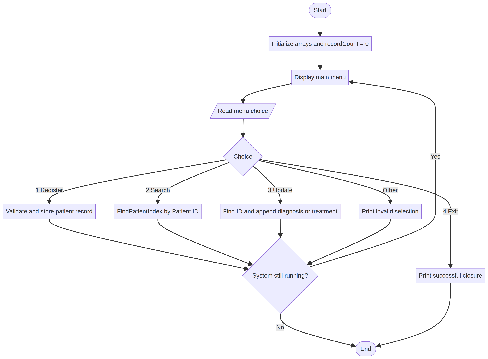

Course Code: PROG101
Course Title: Principles of Programming Logic and Design
Student: Alex Alimamy Debe Kamara (Abubakar Idrisu Bangura)
Student ID: 905006307
Department: Information and Communication Technology
Institution: Limkokwing University of Creative Technology, Sierra Leone
Examiner: Elijah Fullah
Submission: Week 4, Semester 01 (2026/2027)
Date: 7 October 2026
Many community clinics and public hospitals in Sierra Leone have historically depended on paper files, notebooks, and physical folders to record patient information. Paper records can be damaged by moisture, humidity, fire, loss, or ordinary wear. Retrieval can also be slow when a patient needs care urgently or when the file is stored in another department.
Fragmented records create a second problem. A patient may visit several clinics and carry incomplete information from one facility to another. If a previous diagnosis, allergy, or treatment is unavailable, a health worker may need to repeat questions or tests. This can delay care and increase the risk of inconsistent decisions. Paper folders also provide limited access control and do not automatically create an audit trail.
This assignment proposes the Digital Healthcare Patient Data Management System (DHPDMS), a small offline-first logic model that demonstrates registration, search, and medical-record updates. It is designed for programming-logic practice, not as a production clinical system.
DHPDMS stores a bounded set of synthetic patient records in parallel arrays. Each record includes a patient ID, name, age, gender, contact number, and diagnosis history. A menu loop allows an authorized operator in this classroom model to register a patient, search for a patient, append a diagnosis or treatment, or exit.
The system uses a reusable sequential-search function. The function returns the matching array position or -1 when no record exists. Registration validates required fields, prevents impossible ages, checks for duplicate patient IDs, and prevents storage beyond MAX_PATIENTS. Updating also requires an existing patient ID before it appends a new entry.
A real system would replace the arrays with a secure, backed-up database and would require authentication, role-based permissions, encryption, audit logging, consent and retention rules, interoperability standards, and clinical governance.
The workflow is divided into four main modules: Main, RegisterPatient, SearchPatient, and UpdateRecord. Two reusable functions support them: FindPatientIndex and ValidatePatientInput.
The same sequence appears during many clinic visits: identify the patient, retrieve the existing record, review relevant history, and append a new consultation event. The design also recognizes that every search can use the same loop and comparison rule.
The prototype omits database drivers, network protocols, hospital information-system integrations, and physical storage details. It focuses on variables, arrays, decisions, loops, functions, and outputs. The selected fields represent only a minimal classroom data model.
The program uses sequence for menu processing, selection for menu choices and validation, repetition through a WHILE menu loop and FOR search loop, and modular procedures for each patient operation.
DHPDMS aligns with SDG 3 by supporting faster retrieval and continuity of health information. A reliable record can help a health worker see previous information rather than starting from an incomplete history. This is a potential contribution to safer and more accessible care, not a guarantee of clinical outcomes.
The project aligns with SDG 9 by demonstrating how open, maintainable digital infrastructure can support a public-service workflow. An offline-first design is relevant to environments where connectivity may be intermittent. A production version should synchronize safely when connectivity returns and should preserve data integrity during outages.
Open-source software can reduce licensing barriers, avoid vendor lock-in, and allow Sierra Leonean students and ICT professionals to inspect and adapt the logic. Publishing assumptions also makes errors easier to identify and correct. The repository contains plain-text pseudocode and flowchart source so that the design remains readable.
The project has the potential to support a digital public good because it addresses a public health need through reusable, adaptable logic. However, openness alone is not enough. A responsible health implementation would need privacy-by-design, minimum necessary data collection, secure authentication, access levels, audit records, encryption, backup and recovery, accessibility, and a clear owner responsible for maintenance.
The direct beneficiaries are patients, nurses, medical officers, records officers, and administrative staff. Faster retrieval may reduce waiting and avoid unnecessary duplication. A unified record structure may also improve continuity when a patient moves between departments or facilities.
The system is intended to run on low-cost hardware and to support local maintenance. Sustainability would depend on staff training, user support, electricity, backup procedures, replacement hardware, and a realistic data-governance policy. The system should not assume that every patient has a phone or reliable internet access.
| Module | Main responsibility |
|---|---|
Main |
Displays the menu, reads the choice, and repeats until exit |
RegisterPatient |
Validates and stores new synthetic patient data |
SearchPatient |
Finds and displays a patient record by ID |
UpdateRecord |
Appends a diagnosis or treatment to an existing record |
FindPatientIndex |
Sequentially searches IDs and returns an index or -1 |
ValidatePatientInput |
Checks required fields and age range |
Data model: patientID[], fullName[], age[], gender[], contactNumber[], and diagnosisHistory[]. The arrays use the same index for one patient record. recordCount identifies how many positions are currently occupied.
MAX_PATIENTS and initialize empty arrays.recordCount = 0 and isSystemRunning = TRUE.WHILE loop.menuChoice.RegisterPatient.SearchPatient.UpdateRecord.isSystemRunning = FALSE.The complete corrected pseudocode is provided in Pseudocode/dhpdm_pseudocode.txt. It improves the short Gemini draft by adding a record-count boundary, duplicate-ID detection, age validation, an actual reusable search function, a real update operation, and clear failure paths for missing records.

Figure 1. Main menu flow showing registration, searching, updating, invalid-choice handling, repetition, and exit.
The editable Mermaid source is stored in Flowcharts/dhpdm_system.mmd.
Input: Choice 1; ID P102; name Alex Kamara; age 25; gender Male; contact 076000000; diagnosis Malaria test positive - treatment recorded.
Expected output: Patient record successfully saved for ID: P102.
Input: Choice 2; patient ID P102.
Expected output: The system prints the name, age, gender, contact number, and diagnosis history stored at the matching array position.
Input: Choice 3; patient ID P102; new entry Follow-up completed - medication continued.
Expected output: Medical record updated successfully. The new entry is appended to the diagnosis history.
Input: Choice 2; patient ID P999.
Expected output: Patient record not found. No array entry is changed.
Input: Blank ID, blank name, or age -2.
Expected output: Invalid patient information. Record not saved.
Input: Choice 4.
Expected output: System closed successfully.
The repository includes README.md, the report in Documentation/, the flowchart source and PNG in Flowcharts/, the pseudocode in Pseudocode/, references, and a screenshot-evidence guide. The planned progressive commits are:
Initial commit: Add README and project outlineDocs: Add rationale and SDG alignmentLogic: Add DHPDMS pseudocodeDocs: Add flowchart and complete reportFor printed evidence, capture the repository home page, the commits page, and the rendered flowchart. Screenshots must not contain real patient information.
Academic note: All examples are synthetic. This project must not be connected to real patient data without formal authorization, security controls, clinical validation, and applicable legal and ethical review.